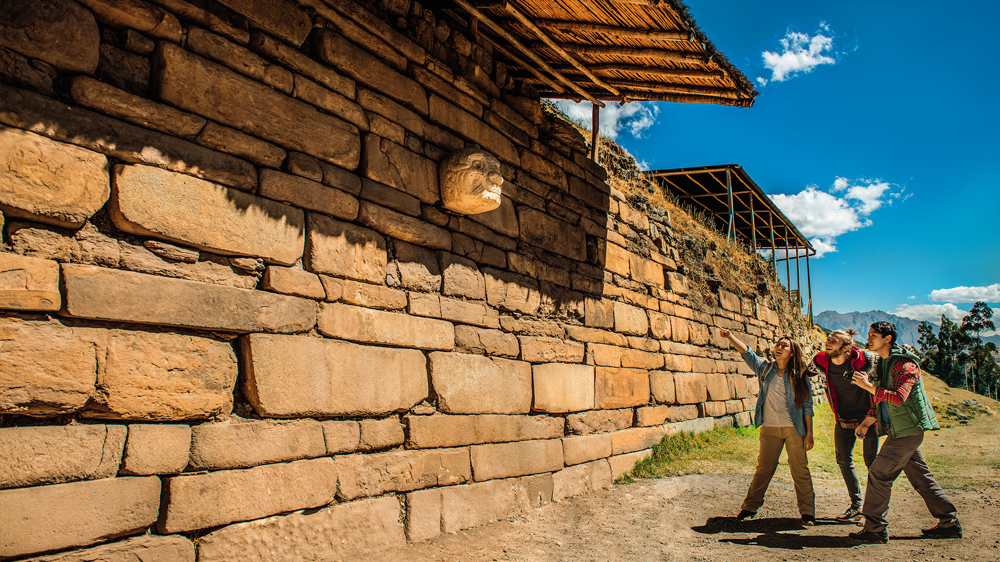

Perú está lleno de atractivos sorprendentes ¡Descúbrelos!

¡Ven acompáñanos en esta aventura!

Apurímac
Apurímac es un tesoro escondido en el centro de los Andes peruanos: tranquilidad, historia
milenaria,
cultura y actividades ancestrales que se practican hasta el día de hoy en un pueblo que espera
ansiosamente para que cada vez más viajeros, turistas y aventureros lo descubran. Una vez que
decidas
entrar en sus caminos, terreno escarpado y vertientes sinuosas, encontrarás el premio mayor: conocer
a
fondo la cuna de la Cultura Chanka.
Con el pasar de los años, esta región se ha convertido en una de las locaciones favoritas entre los
trotamundos. Un recorrido por la Plaza de Armas, el templo de San Pedro, el puente colonial El
Chumbao,
el Santuario de Campanayocc o conocer el Mausoleo de José María Arguedas, considerado como uno de
los
más grandes representantes de la literatura peruana, serán esenciales para ir aclimatándote al frío
y
altitud (2900 m s. n. m., de promedio).
A su vez, puedes darte cita en la ciudad de Andahuaylas, donde puedes conocer la Casa Hacienda de
Illanya, con su estilo colonial y arquitectura francesa, dar una caminata por la exCasa Hacienda de
Yaca, donde se producía aguardiente desde el siglo XVIII, o realizar un paseo por el Mirador de
Taraccasa. Todas estas locaciones pueden convencerte que, en lugar de viajar, te transportaste al
pasado.